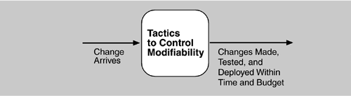
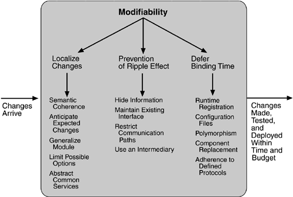

5.3 Modifiability Tactics
Recall from Chapter 4 that tactics to control modifiability have as their goal controlling the time and cost to implement, test, and deploy changes. Figure 5.4 shows this relationship.

We organize the tactics for modifiability in sets according to their goals. One set has as its goal reducing the number of modules that are directly affected by a change. We call this set "localize modifications." A second set has as its goal limiting modifications to the localized modules. We use this set of tactics to "prevent the ripple effect." Implicit in this distinction is that there are modules directly affected (those whose responsibilities are adjusted to accomplish the change) and modules indirectly affected by a change (those whose responsibilities remain unchanged but whose implementation must be changed to accommodate the directly affected modules). A third set of tactics has as its goal controlling deployment time and cost. We call this set "defer binding time."
LOCALIZE MODIFICATIONS
Although there is not necessarily a precise relationship between the number of modules affected by a set of changes and the cost of implementing those changes, restricting modifications to a small set of modules will generally reduce the cost. The goal of tactics in this set is to assign responsibilities to modules during design such that anticipated changes will be limited in scope. We identify five such tactics.
Maintain semantic coherence.
Semantic coherence refers to the relationships among responsibilities in a module. The goal is to ensure that all of these responsibilities work together without excessive reliance on other modules. Achievement of this goal comes from choosing responsibilities that have semantic coherence. Coupling and cohesion metrics are an attempt to measure semantic coherence, but they are missing the context of a change. Instead, semantic coherence should be measured against a set of anticipated changes. One subtactic is to abstract common services. Providing common services through specialized modules is usually viewed as supporting re-use. This is correct, but abstracting common services also supports modifiability. If common services have been abstracted, modifications to them will need to be made only once rather than in each module where the services are used. Furthermore, modification to the modules using those services will not impact other users. This tactic, then, supports not only localizing modifications but also the prevention of ripple effects. Examples of abstracting common services are the use of application frameworks and the use of other middleware software.
Anticipate expected changes.
Considering the set of envisioned changes provides a way to evaluate a particular assignment of responsibilities. The basic question is "For each change, does the proposed decomposition limit the set of modules that need to be modified to accomplish it?" An associated question is "Do fundamentally different changes affect the same modules?" How is this different from semantic coherence? Assigning responsibilities based on semantic coherence assumes that expected changes will be semantically coherent. The tactic of anticipating expected changes does not concern itself with the coherence of a module's responsibilities but rather with minimizing the effects of the changes. In reality this tactic is difficult to use by itself since it is not possible to anticipate all changes. For that reason, it is usually used in conjunction with semantic coherence.
Generalize the module.
Making a module more general allows it to compute a broader range of functions based on input. The input can be thought of as defining a language for the module, which can be as simple as making constants input parameters or as complicated as implementing the module as an interpreter and making the input parameters be a program in the interpreter's language. The more general a module, the more likely that requested changes can be made by adjusing the input language rather than by modifying the module.
Limit possible options.
Modifications, especially within a product line (see Chapter 14), may be far ranging and hence affect many modules. Restricting the possible options will reduce the effect of these modifications. For example, a variation point in a product line may be allowing for a change of processor. Restricting processor changes to members of the same family limits the possible options.
PREVENT RIPPLE EFFECTS
A ripple effect from a modification is the necessity of making changes to modules not directly affected by it. For instance, if module A is changed to accomplish a particular modification, then module B is changed only because of the change to module A. B has to be modified because it depends, in some sense, on A.
We begin our discussion of the ripple effect by discussing the various types of dependencies that one module can have on another. We identify eight types:
Syntax of
- - data.
For B to compile (or execute) correctly, the type (or format) of the data that is produced by A and consumed by B must be consistent with the type (or format) of data assumed by B.
- - service.
For B to compile and execute correctly, the signature of services provided by A and invoked by B must be consistent with the assumptions of B.
Semantics of
- - data.
For B to execute correctly, the semantics of the data produced by A and consumed by B must be consistent with the assumptions of B.
- - service.
For B to execute correctly, the semantics of the services produced by A and used by B must be consistent with the assumptions of B.
Sequence of
- - data.
For B to execute correctly, it must receive the data produced by A in a fixed sequence. For example, a data packet's header must precede its body in order of reception (as opposed to protocols that have the sequence number built into the data).
- - control.
For B to execute correctly, A must have executed previously within certain timing constraints. For example, A must have executed no longer than 5ms before B executes.
Identity of an interface of A.
A may have multiple interfaces. For B to compile and execute correctly, the identity (name or handle) of the interface must be consistent with the assumptions of B. Location of A (runtime).
For B to execute correctly, the runtime location of A must be consistent with the assumptions of B. For example, B may assume that A is located in a different process on the same processor. Quality of service/data provided by A.
For B to execute correctly, some property involving the quality of the data or service provided by A must be consistent with B's assumptions. For example, data provided by a particular sensor must have a certain accuracy in order for the algorithms of B to work correctly. Existence of A.
For B to execute correctly, A must exist. For example, if B is requesting a service from an object A, and A does not exist and cannot be dynamically created, then B will not execute correctly. Resource behavior of A.
For B to execute correctly, the resource behavior of A must be consistent with B's assumptions. This can be either resource usage of A (A uses the same memory as B) or resource ownership (B reserves a resource that A believes it owns).
With this understanding of dependency types, we can now discuss tactics available to the architect for preventing the ripple effect for certain types.
Notice that none of our tactics necessarily prevent the ripple of semantic changes. We begin with discussion of those that are relevant to the interfaces of a particular module—information hiding and maintaining existing interfaces—and follow with one that breaks a dependency chain—use of an intermediary.
Hide information.
Information hiding is the decomposition of the responsibilities for an entity (a system or some decomposition of a system) into smaller pieces and choosing which information to make private and which to make public. The public responsibilities are available through specified interfaces. The goal is to isolate changes within one module and prevent changes from propagating to others. This is the oldest technique for preventing changes from propagating. It is strongly related to "anticipate expected changes" because it uses those changes as the basis for decomposition.
Maintain existing interfaces.
If B depends on the name and signature of an interface of A, maintaining this interface and its syntax allows B to remain unchanged. Of course, this tactic will not necessarily work if B has a semantic dependency on A, since changes to the meaning of data and services are difficult to mask. Also, it is difficult to mask dependencies on quality of data or quality of service, resource usage, or resource ownership. Interface stability can also be achieved by separating the interface from the implementation. This allows the creation of abstract interfaces that mask variations. Variations can be embodied within the existing responsibilities, or they can be embodied by replacing one implementation of a module with another.
Patterns that implement this tactic include
- - adding interfaces.
Most programming languages allow multiple interfaces. Newly visible services or data can be made available through new interfaces, allowing existing interfaces to remain unchanged and provide the same signature.
- - adding adapter.
Add an adapter to A that wraps A and provides the signature of the original A.
- - providing a stub A.
If the modification calls for the deletion of A, then providing a stub for A will allow B to remain unchanged if B depends only on A's signature.
Restrict communication paths.
Restrict the modules with which a given module shares data. That is, reduce the number of modules that consume data produced by the given module and the number of modules that produce data consumed by it. This will reduce the ripple effect since data production/consumption introduces dependencies that cause ripples. Chapter 8 (Flight Simulation) discusses a pattern that uses this tactic.
Use an intermediary.
If B has any type of dependency on A other than semantic, it is possible to insert an intermediary between B and A that manages activities associated with the dependency. All of these intermediaries go by different names, but we will discuss each in terms of the dependency types we have enumerated. As before, in the worst case, an intermediary cannot compensate for semantic changes. The intermediaries are
- - data (syntax).
Repositories (both blackboard and passive) act as intermediaries between the producer and consumer of data. The repositories can convert the syntax produced by A into that assumed by B. Some publish/subscribe patterns (those that have data flowing through a central component) can also convert the syntax into that assumed by B. The MVC and PAC patterns convert data in one formalism (input or output device) into another (that used by the model in MVC or the abstraction in PAC).
- - service (syntax).
The facade, bridge, mediator, strategy, proxy, and factory patterns all provide intermediaries that convert the syntax of a service from one form into another. Hence, they can all be used to prevent changes in A from propagating to B.
- - identity of an interface of A.
A broker pattern can be used to mask changes in the identity of an interface. If B depends on the identity of an interface of A and that identity changes, by adding that identity to the broker and having the broker make the connection to the new identity of A, B can remain unchanged.
- - location of A (runtime).
A name server enables the location of A to be changed without affecting B. A is responsible for registering its current location with the name server, and B retrieves that location from the name server.
- - resource behavior of A or resource controlled by A.
A resource manager is an intermediary that is responsible for resource allocation. Certain resource managers (e.g., those based on Rate Monotonic Analysis in real-time systems) can guarantee the satisfaction of all requests within certain constraints. A, of course, must give up control of the resource to the resource manager.
- - existence of A.
The factory pattern has the ability to create instances as needed, and thus the dependence of B on the existence of A is satisfied by actions of the factory.
DEFER BINDING TIME
The two tactic categories we have discussed thus far are designed to minimize the number of modules that require changing to implement modifications. Our modifiability scenarios include two elements that are not satisfied by reducing the number of modules to be changed—time to deploy and allowing nondevelopers to make changes. Deferring binding time supports both of those scenarios at the cost of requiring additional infrastructure to support the late binding.
Decisions can be bound into the executing system at various times. We discuss those that affect deployment time. The deployment of a system is dictated by some process. When a modification is made by the developer, there is usually a testing and distribution process that determines the time lag between the making of the change and the availability of that change to the end user. Binding at runtime means that the system has been prepared for that binding and all of the testing and distribution steps have been completed. Deferring binding time also supports allowing the end user or system administrator to make settings or provide input that affects behavior.
Many tactics are intended to have impact at loadtime or runtime, such as the following.
Runtime registration supports plug-and-play operation at the cost of additional overhead to manage the registration. Publish/subscribe registration, for example, can be implemented at either runtime or load time. Configuration files are intended to set parameters at startup. Polymorphism allows late binding of method calls. Component replacement allows load time binding. Adherence to defined protocols allows runtime binding of independent processes.
The tactics for modifiability are summarized in Figure 5.5.


|